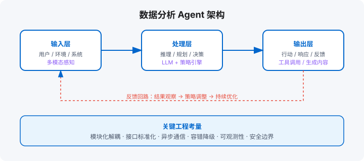

场景二：数据分析 Agent
自然语言提问 → 查数 → 可视化 / SQL 生成 / 异常检测 / 只读边界
学习目标
- 为数据分析 Agent 设计「语义层 + 校验链」双保险
- 理解 NL2SQL 的准确率边界，知道哪里必须加人工确认
- 让每个数字可追溯：从问题到 SQL 到结果到出处
章节地图：16.1 需求 → 16.2 工具 → 16.3 记忆 → 16.4 边界 → 16.5 NL2SQL 准确率与校验链 → 本章产出。

16.1 需求：自然语言提问 → 查数 → 可视化
数据分析 Agent 的目标是让非技术用户也能自助取数。典型交互：
- 「上个月各区域的销售额和同比变化」
- 「找出 Q3 客单价最高的前 10 个客户」
- 「预测下个月的用户增长趋势」
Agent 需要完成：NL → SQL → 查询执行 → 结果校验 → 可视化推荐。
16.2 工具：SQL 生成、图表库、异常检测
- SQL 生成：把自然语言翻译成 SQL。关键是 schema 注入——把表结构、字段注释塞进 prompt，让模型知道有哪些字段可用。
- 图表库：根据数据特征自动选图表类型（趋势用折线、占比用饼图、分布用直方图）。推荐 ECharts / Chart.js / Observable Plot。
- 异常检测：对返回结果做统计检验（Z-score、IQR），发现异常值并在报告中高亮。
16.3 记忆：业务指标定义、用户常用查询
- 指标词典：把业务指标（如 DAU、GMV、复购率）的计算口径持久化，避免 Agent 每次都重新理解。
- 用户常用查询：记住高频查询，下次用户问类似问题时直接给出历史图表 + 增量说明。
16.4 边界：只读查询、结果校验
数据分析 Agent 的安全红线：
- 只读查询：禁止 DDL / DML，只允许 SELECT。SQL 执行前过一遍语法校验和权限过滤。
- 行数限制：强制 LIMIT，防止全表扫描拖垮数据库。
- 结果校验：用规则或轻量模型检查返回数据是否合理（如负数销售额、未来日期）。
16.5 NL2SQL 的准确率边界与校验链
自然语言查数最大的风险不是「查不到」，而是「查到一个看起来对、实际错的数」——错误数字一旦进入周报和决策，代价远超故障。校验链要建在三个层面上：
| 层面 | 手段 | 拦住什么错 |
|---|---|---|
| 语义层 | 指标字典（口径、维度、过滤条件）+ 表关系文档；模型不许「猜」字段 | 口径错误（把「活跃用户」算成「注册用户」） |
| 执行层 | 只读账号 + 行数上限 + 超时 + EXPLAIN 预检全表扫描 | 慢查询打挂库、误写操作 |
| 结果层 | 规模合理性检查（订单量不会日增 50 倍）、环比波动标注、空结果反问确认 | 静默的错误数字、单位错误、时间窗口错位 |
落地配方：① 指标字典是第一公民——先让业务把「GMV、复购率」等高频指标的定义写成文档，Agent 只允许按字典组装 SQL；② 每个结果附可复现 SQL，用户点开能自己跑；③ 波动超过阈值的数字自动触发「确认话术」而非直接呈现。记住：数据分析 Agent 的信任是靠「每次都可验证」攒出来的，一次说不清的答案就清零。
动手实验
- 写下你业务里 TOP10 指标的口径定义（口径、维度、示例 SQL），这就是指标字典 v0。
- 构造 5 个「说得模糊」的问题（如「上个月卖得怎么样」），观察 Agent 的澄清策略是否符合预期。
- 给结果层加一条 sanity check：任一指标环比波动 >30% 时，输出必须附波动归因提示。
完整实战：电商问数智能体
第 16 章前面讲的 NL2SQL 三层校验是骨架，这里给一个企业级问数项目的完整管线——这是参考实战项目「电商问数」整理出的生产结构，覆盖从用户提问到返回数据的全链路：
整体管线
# 电商问数六步管线（每步的失败都有明确的降级路径）
# 用户问题 → ①关键词/实体抽取 → ②多路召回(字段+指标+历史SQL) → ③上下文组装
# → ④SQL 生成 → ⑤三层校验 → ⑥执行+可视化建议
# ②多路召回：关键词 BM25 召回表字段、向量召回指标定义、历史 SQL 库召回相似问题
def recall(question: str, top_k: int = 5):
kws = extract_keywords(question) # 时间/维度/指标/地域
by_bm25 = es.search('field_dict', kws) # ES 全文：字段名与同义词
by_vector = qdrant.search(question, top_k) # Qdrant 向量：指标口径定义
by_history= es.search('sql_library', question) # 历史 SQL 库：同类问题的成例
return rrf_fuse([by_bm25, by_vector, by_history])# RRF 融合三路结果
# ④⑤SQL 生成与三层校验（第 16 章已展开，此处总装）
def ask(question: str):
ctx = recall(question)
sql = llm_generate_sql(question, ctx) # 生成阶段
sql = lint_semantic(sql) # 校验层1：只读/无 DROP/限定分区键
rows = dry_run(sql) # 校验层2：EXPLAIN 看扫描量，超限打回
if exceed_scan_limit(rows): raise ScanTooLarge()
data = execute(sql, timeout=10) # 执行层：只读账号 + 超时 + 行数上限
# 校验层3：结果合理性（环比波动>300% 交给 Agent 二次确认口径）
return render(data, suggest_chart(question))
// TS 侧同构管线：六步 + RRF 融合
interface RecallHit { id: string; score: number; source: 'bm25' | 'vector' | 'history' }
// RRF（倒数排名融合）：不比分数的绝对值，只比各路排名——解决多路分数不可比问题
function rrfFuse(lanes: RecallHit[][], k = 60): RecallHit[] {
const fused = new Map();
lanes.forEach((lane) =>
lane.forEach((hit, rank) => {
const prev = fused.get(hit.id);
const gain = 1 / (k + rank + 1);
fused.set(hit.id, prev ? { ...prev, score: prev.score + gain } : { ...hit, score: gain });
})
);
return [...fused.values()].sort((a, b) => b.score - a.score);
}
async function ask(question: string) {
const lanes = await Promise.all([
esSearch('field_dict', extractKeywords(question)),
qdrantSearch(question, 5),
esSearch('sql_library', question),
]);
const ctx = rrfFuse(lanes);
const sql = await llmGenerateSql(question, ctx);
lintSemantic(sql); // 只读 / 无 DROP / 限定分区键
await dryRun(sql); // EXPLAIN 看扫描量
return render(await execute(sql, 10_000));
}
生产要点
| 环节 | 关键设计 | 踩坑教训 |
|---|---|---|
| 元数据知识库 | 表/字段/指标口径同步进 ES + Qdrant，带同义词字典（如「GMV=成交总额」） | 不同部门对同一指标口径不一——知识库必须带「口径负责人」 |
| 多路召回 | BM25 抓专名、向量抓语义、历史 SQL 抓成例，RRF 融合 | 只调一路必漏召：编号类查询只有 BM25 能中 |
| SQL 生成 | 提示词里带「相关字段列表 + 指标定义 + 相似历史 SQL」三段上下文 | 不给字段列表，模型会按字面意思编表名 |
| 执行安全 | 只读账号、行数上限、10 秒超时、分区键强制 | 全表扫描一次能打挂 AnaliticDB——EXPLAIN 前置拦截 |
| 结果呈现 | 按问题意图自动建议图表类型（趋势→折线，占比→饼图） | 返回 5000 行原始数据给用户等于没返回 |
| 接口层 | FastAPI 暴露 /ask，依赖组装（检索器、LLM、执行器）集中注入 | 把 DB 连接写在处理函数里，测试根本没法写 |
这个项目的完整实现还包括「字段与指标检索能力构建」「SQL 生成前的信息过滤与补全」等细节模块，但抓住了上面六步和四层校验，就抓住了 90% 的生产质量。问数类 Agent 的竞争不在模型，在元数据质量和链路校验。
本章产出：数据分析 Agent 的最小实现（双语言）
Python 版本
"""
数据分析 Agent 最小实现 —— Python
"""
from __future__ import annotations
import re
from dataclasses import dataclass
from typing import Any
@dataclass
class TableSchema:
table: str
columns: dict[str, str] # column -> type + comment
SCHEMA = {
"orders": TableSchema("orders", {
"order_id": "int 订单ID",
"user_id": "int 用户ID",
"amount": "decimal 金额",
"created_at": "date 创建时间",
"region": "varchar 区域",
}),
"users": TableSchema("users", {
"user_id": "int 用户ID",
"name": "varchar 姓名",
"register_date": "date 注册日期",
}),
}
class DataAnalyst:
def __init__(self):
self.schema = SCHEMA
def nl_to_sql(self, question: str) -> str:
"""极简 NL2SQL：用 schema 做 prompt 上下文，实际生产接 LLM。"""
schema_desc = "\n".join(f"{t}.{c} ({d})" for t, s in self.schema.items() for c, d in s.columns.items())
prompt = f"Schema:\n{schema_desc}\nQuestion: {question}\nSQL:"
# 这里模拟 LLM 输出；生产环境替换为真实调用
if "销售额" in question or "amount" in question:
return "SELECT region, SUM(amount) as total FROM orders GROUP BY region"
if "用户" in question:
return "SELECT * FROM users LIMIT 10"
return "SELECT 1"
def validate_sql(self, sql: str) -> bool:
forbidden = ["DROP", "DELETE", "UPDATE", "INSERT", "ALTER", "TRUNCATE"]
upper = sql.upper()
return not any(f in upper for f in forbidden) and "LIMIT" in upper
def execute(self, sql: str) -> list[dict]:
# 实际接数据库；这里返回模拟数据
if "SUM" in sql:
return [{"region": "华东", "total": 125000}, {"region": "华南", "total": 98000}]
return [{"user_id": 1, "name": "张三"}]
def recommend_chart(self, sql: str, data: list[dict]) -> str:
if len(data) <= 5 and any("total" in d for d in data):
return "bar" # 柱状图适合少量对比
if any("date" in d or "created_at" in d for d in data):
return "line" # 时间序列用折线
return "table"
def query(self, question: str) -> dict:
sql = self.nl_to_sql(question)
if not self.validate_sql(sql):
return {"error": "SQL 不合法：只允许 SELECT + LIMIT"}
data = self.execute(sql)
chart = self.recommend_chart(sql, data)
return {"question": question, "sql": sql, "data": data, "chart": chart}
# 使用示例
if __name__ == "__main__":
agent = DataAnalyst()
print(agent.query("上个月各区域的销售额是多少？"))TypeScript 版本
/**
数据分析 Agent 最小实现 —— TypeScript
*/
interface TableSchema { table: string; columns: Record; }
const SCHEMA: Record = {
orders: { table: "orders", columns: { order_id: "int 订单ID", user_id: "int 用户ID", amount: "decimal 金额", created_at: "date 创建时间", region: "varchar 区域" } },
users: { table: "users", columns: { user_id: "int 用户ID", name: "varchar 姓名", register_date: "date 注册日期" } },
};
class DataAnalyst {
private schema = SCHEMA;
nlToSql(question: string): string {
const desc = Object.values(this.schema).flatMap(s => Object.entries(s.columns).map(([c, d]) => `${s.table}.${c} (${d})`)).join("\n");
if (/销售额|amount/.test(question)) return "SELECT region, SUM(amount) as total FROM orders GROUP BY region";
if (/用户|user/.test(question)) return "SELECT * FROM users LIMIT 10";
return "SELECT 1";
}
validateSql(sql: string): boolean {
const forbidden = ["DROP", "DELETE", "UPDATE", "INSERT", "ALTER", "TRUNCATE"];
const upper = sql.toUpperCase();
return !forbidden.some(f => upper.includes(f)) && sql.toUpperCase().includes("LIMIT");
}
execute(sql: string): Record[] {
if (sql.includes("SUM")) return [{ region: "华东", total: 125000 }, { region: "华南", total: 98000 }];
return [{ user_id: 1, name: "张三" }];
}
recommendChart(sql: string, data: Record[]): string {
if (data.length <= 5 && data.some(d => "total" in d)) return "bar";
if (data.some(d => "date" in d || "created_at" in d)) return "line";
return "table";
}
query(question: string): Record {
const sql = this.nlToSql(question);
if (!this.validateSql(sql)) return { error: "SQL 不合法：只允许 SELECT + LIMIT" };
const data = this.execute(sql);
return { question, sql, data, chart: this.recommendChart(sql, data) };
}
}
// 使用示例
const agent = new DataAnalyst();
console.log(agent.query("上个月各区域的销售额是多少？")); 本章产出
- 数据分析 Agent 的核心流程：NL → SQL → 执行 → 可视化推荐。
- SQL 注入防御：只允许 SELECT + LIMIT，禁止 DDL/DML。
- 最小可运行实现，可直接接入真实 LLM 和数据库。